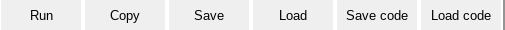
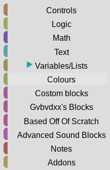
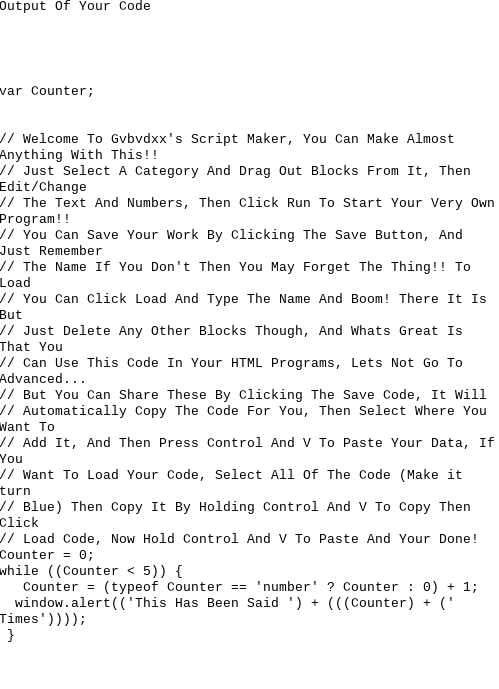

This Is Only For Teachers.
Teacher:show the videos and images to the students
We Will Start Out With Simple Stuff And Have A Look Around Of What The Stuff Does:
Starting Out:
Welcome To Gvbvdxx's Script Maker!
A Script Stands For Code.
Lets Look Around The Editor
This is our work space, this is were we right out our code.
This Is The Function Buttons, The Run Button Runs Our Program.
This Is The Toolbox, Its Where We Get Our Blocks, Click On A Category And Drag Out A Block To The Work Space.
This Is Our Generated Code, This Is Used For Pepole That Want To Make Stuff, But On The Top Is A Debugger,Debuggers Are Things That We Can Use To Test The Code, On The Bottom Is The Generated Code.
Now Shall We?
We Are Going To Make A Program, For This We Will Make A Simple "Hello World!" Program
Do The Following
Click Run And See What Happens!
Did It Say "Hello World!!"?
Now Lets Do Another One